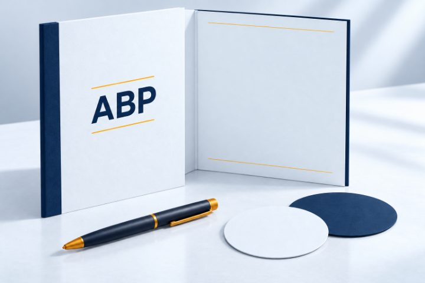

01
ABP Pack
The material, downloaded.
£10GBP
Immediately from your payment
The ABP files and instructions, packaged for you to keep.
Agent Behaviour Policies by RiskMandate
We sell Agent Behaviour Policies: what your agent can do, what you authorised, and the gap between them — for one agent, in one deployment.
Take the files, take a vault you hold the keys to, or have a named security professional correct it against your deployment.
For one agent, in one deployment · from £10
Concept artwork · the deliverable is digital
One ABP. Four levels.
The behaviour policy is the same document at every level. What changes is the form it arrives in and who does the correcting.
The material, downloaded.
£10GBP
Immediately from your payment
The ABP files and instructions, packaged for you to keep.
The material, in a working vault.
£50GBP
1 to 2 days from your payment
The pack as a vault, with its reading app, your keys and version history.
Your deployment, reflected in the mandate.
£500GBP
1 to 3 days from your reply
A named security professional corrects the mandate against your details.

04Two sessions and a custom vault.
£1,500GBP
1 to 5 days from your reply
Two half-hour sessions and a custom vault, reviewed and signed off.
These cards open the product, not a checkout. A line is added to the order this browser holds, and the money is taken later, on the payment provider’s own page. Nothing is typed on this site at any point.
Artwork represents digital deliverables. Every price here is read from the same file the live store is built from, and ABP Vault carries the leading action because it is the level most buyers want, not because it is the cheapest.
Start with your setup
Fifteen published shapes, one per target application. Open the one closest to your deployment and read it before you spend anything.
What is an ABP?
The Agent Behaviour Policy brings these together for one deployment. It describes and it does not judge, so it carries no score.
01
Everything the agent can actually reach in this deployment — not what somebody meant it to reach.
02
What you authorised it to do, written so that somebody else can read it and disagree.
03
The gap between the two. It is derived, so it moves when either side does.
04
What really stands in the way of each thing: a setting, a boundary, or nothing at all.
What has been built
Not screenshots and not a deck. Published vaults of the same kind of document this store sells, each with its own read key on its own page, and 28 published in total. The method here is a licence to operate for one agent in one deployment: what it can do, what you authorised, and the gap.